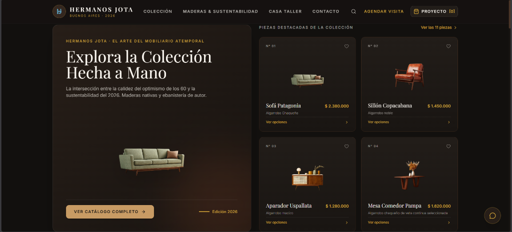
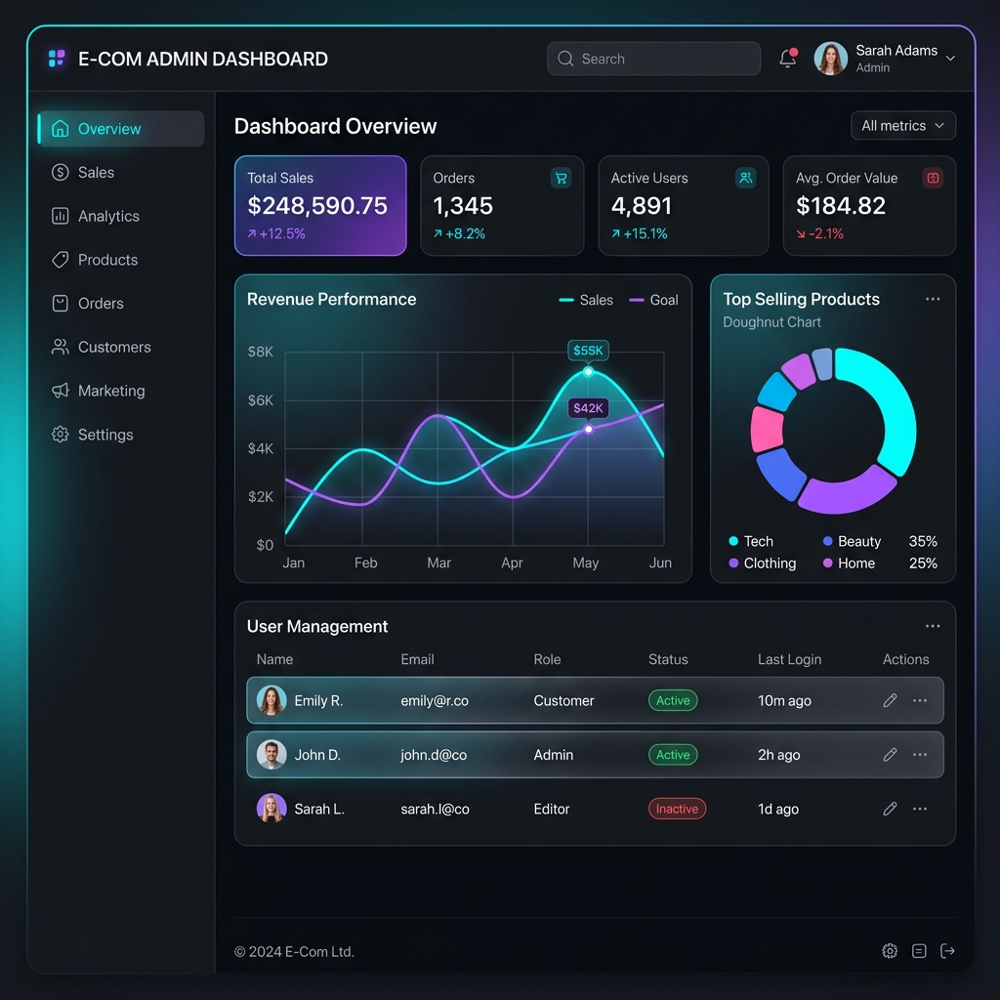
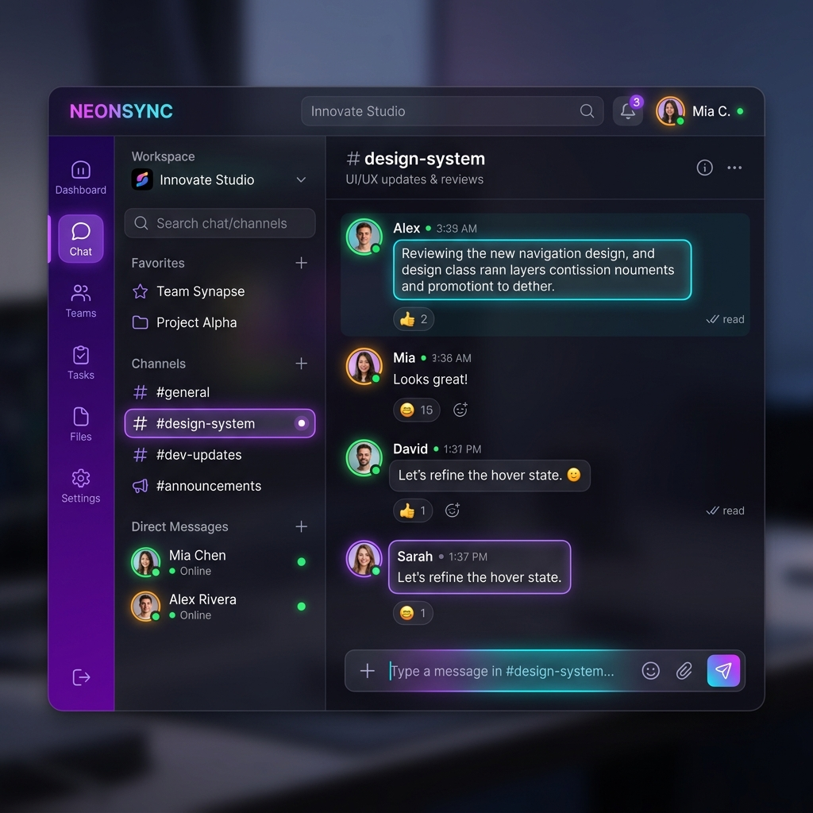
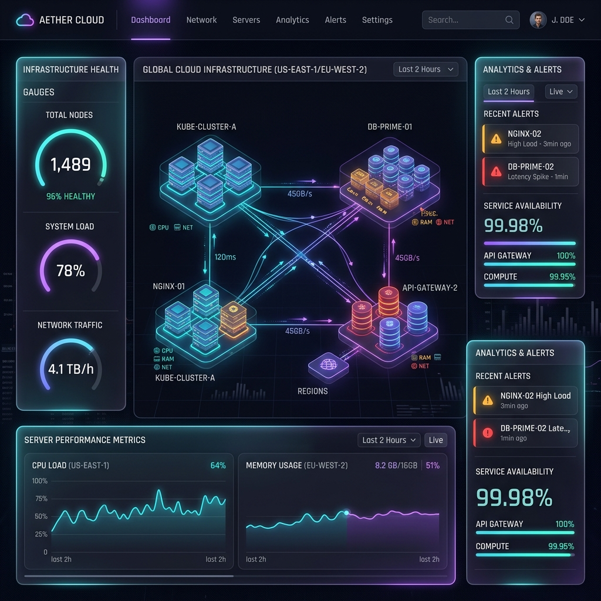

Técnico Universitario en Programación (UTN FRCU). Especializado en el desarrollo de software Cliente/Servidor, APIs y arquitecturas robustas bajo principios de código limpio y metodologías ágiles.
Soy Técnico Universitario en Programación graduado de la Universidad Tecnológica Nacional (UTN FRCU). Me especializo en la construcción de soluciones web completas, integrando interfaces dinámicas con backends escalables, seguros y bien estructurados.
Cuento con experiencia en levantamiento de requerimientos, diseño de bases de datos relacionales, desarrollo de Web APIs y buenas prácticas de desarrollo como SOLID, Code Reviews y Scrum. Me apasiona el aprendizaje continuo y aportar valor en cada etapa del ciclo de vida del software.
"nombre": "Emanuel Julian Ramirez",
"titulo": "Técnico Universitario en Programación (UTN FRCU)",
"ubicacion": "San José, Entre Ríos, Argentina",
"lenguajes": [
"Java", "JavaScript", "TypeScript", "SQL", "Python"
],
"frameworks": [
"React.js", "Node.js", "Express.js", "Bootstrap", "Web APIs"
],
"base_datos": [
"PostgreSQL", "MySQL"
],
"practicas": [
"Agile / Scrum", "SOLID", "Code Reviews", "Git / GitHub"
],
"contacto": "emanuelrzj@gmail.com"Tecnologías, marcos de trabajo y herramientas aplicadas en el ciclo de vida del software.
Programación orientada a objetos (POO), arquitectura Cliente/Servidor y APIs.
Interfaces dinámicas, desarrollo de componentes, consumo de servicios y diseño responsivo.
Persistencia relacional, control de versiones colaborativo y metodologías ágiles.

Showroom digital interactivo y catálogo de mobiliario artesanal. Cuenta con curaduría de espacios, cálculo de presupuestos en tiempo real, agendador de visitas a taller y cotizador directo con integración a WhatsApp.

Plataforma web desarrollada para centralizar y digitalizar la gestión de postulantes laborales. Construida bajo principios de POO, interfaz dinámica en React, Web APIs y modelado de bases de datos relacionales (SQL).

Plataforma de comunicación en tiempo real con WebSockets, arquitectura Cliente/Servidor distribuida y una interfaz interactiva y reactiva.

API de procesamiento y análisis de métricas en la nube con autenticación segura, estructurada bajo Clean Architecture y contenedorizada con Docker.
Desarrollo integral de plataforma web en entorno Cliente/Servidor y estructuración de base de datos para la nueva bolsa de empleo municipal. Levantamiento directo de requerimientos, diseño arquitectónico, documentación técnica del sistema, implementación de módulos CRUD y control de versiones con Git/GitHub.
Formación intensiva de alto nivel en tecnologías web modernas, arquitecturas escalables, buenas prácticas de desarrollo ágil y metodologías colaborativas impartidas por el ITBA y Santander.
Formación universitaria oficial en desarrollo de software y tecnologías de la información. Dominio de algoritmos, programación orientada a objetos (POO), modelado de bases de datos relacionales (SQL), ingeniería de software y metodologías ágiles.
¿Tienes alguna propuesta o proyecto en mente? Hablemos y construyamos algo extraordinario.